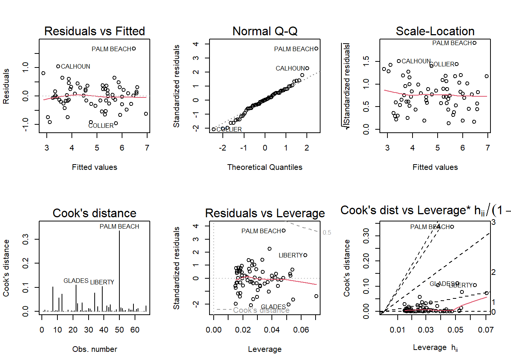

Code
library(tidyverse)
knitr::opts_chunk$set(echo = TRUE)library(tidyverse)
knitr::opts_chunk$set(echo = TRUE)Using backward elimination would result in Beds being removed, because it has the highest p-value of all the variables.
Under the forward selection method, Size would be added first, because it has the largest t-value, indicating the greatest improvement to the null model.
The fact that Beds has a substantial correlation with Price, but a large p-value in the regression model is an indication of small sample size, since p-value is a function of both correlation coefficient and sample size.
#test regression models
library(smss)
data(house.selling.price.2)
full <- lm(P ~ ., data = house.selling.price.2)
forw1 <- lm(P ~ S, data = house.selling.price.2)
forw2 <- lm(P ~ S + New, data = house.selling.price.2)
forw3 <- lm(P ~ S + New + Ba, data = house.selling.price.2)I used the forward selection method to fit models, adding variables, one at a time, based on t-values (highest to lowest).
\(R^{2}\) is highest for the full model with all variables.
Adjusted \(R^{2}\) is highest for the model of Price as a function of Size, Baths, and New.
#calculate PRESS statistics
PRESS <- function(linear.model) {
pr <- residuals(linear.model)/(1-lm.influence(linear.model)$hat)
PRESS <- sum(pr^2)
return(PRESS)
}
PRESS(full)[1] 28390.22PRESS(forw1)[1] 38203.29PRESS(forw2)[1] 31066PRESS(forw3)[1] 27860.05The model with Price as a function of Size, Baths, and New has the lowest PRESS calculation.
#calculate AIC values
AIC(full, k=2)[1] 790.6225AIC(forw1, k=2)[1] 820.1439AIC(forw2, k=2)[1] 800.1262AIC(forw3, k=2)[1] 789.1366The model with Price as a function of Size, Baths, and New has the lowest AIC calculation.
#calculate BIC values
BIC(full)[1] 805.8181BIC(forw1)[1] 827.7417BIC(forw2)[1] 810.2566BIC(forw3)[1] 801.7996The model with Price as a function of Size, Baths, and New has the lowest BIC calculation.
Since the model with Price as a function of Size, Baths, and New has the highest Adjusted \(R^{2}\), and the lowest PRESS, AIC, and BIC calculations, I would choose it as the best one.
#fit multiple regression model
trees_full <- lm(Volume ~ Girth + Height, data = trees)
summary(trees_full)
Call:
lm(formula = Volume ~ Girth + Height, data = trees)
Residuals:
Min 1Q Median 3Q Max
-6.4065 -2.6493 -0.2876 2.2003 8.4847
Coefficients:
Estimate Std. Error t value Pr(>|t|)
(Intercept) -57.9877 8.6382 -6.713 2.75e-07 ***
Girth 4.7082 0.2643 17.816 < 2e-16 ***
Height 0.3393 0.1302 2.607 0.0145 *
---
Signif. codes: 0 '***' 0.001 '**' 0.01 '*' 0.05 '.' 0.1 ' ' 1
Residual standard error: 3.882 on 28 degrees of freedom
Multiple R-squared: 0.948, Adjusted R-squared: 0.9442
F-statistic: 255 on 2 and 28 DF, p-value: < 2.2e-16#run diagnostic plots
par(mfrow = c(2,3)); plot(trees_full, which = 1:6)
From the appearance of the Residuals vs Fitted plot, it seems the assumption of a linear relationship is violated, because the residuals form a pattern of groups, instead of being randomly distributed around the 0 line.
It also appears that the assumption of constant variance is violated, as the Scale-Location plot shows heteroskedasticity in the residuals because the baseline shows magnitude changes.
library(alr4)Loading required package: carLoading required package: carData
Attaching package: 'car'The following object is masked from 'package:dplyr':
recodeThe following object is masked from 'package:purrr':
someLoading required package: effectslattice theme set by effectsTheme()
See ?effectsTheme for details.data(florida)
vote <- lm(Buchanan ~ Bush, data = florida)
#produce diagnostic plots
par(mfrow = c(2,3)); plot(vote, which = 1:6)
Palm Beach County is a definite outlier in this model, as it does not follow the patterns produced by the other county data in any of the diagnostic plots, and its residual values are much higher.
#log both variables in model
vote_log <- lm(log(Buchanan) ~ log(Bush), data = florida)
par(mfrow = c(2,3)); plot(vote_log, which = 1:6)
Palm Beach County still appears to be at the high end of the data, but it no longer appears to be an actual outlier, because it is now much closer in line with the patterns and values of the other counties.